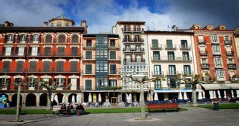

Iruñea (izen ofiziala: Iruña euskaraz, Pamplona gaztelaniaz) Nafarroa Garaiko hiriburua da, herrialde horren erdialdean kokatua. Gainera, Euskal Herriko hiriburu historikoa da, euskal abertzaletasunaren arabera. Hiria Nafarroa Garaiko erdialdean kokatua da, Iruñerria eskualdean, eta Arga ibaiak zeharkatua. Gainera, hirian zehar Arga ibaiaren beste bi ibaiadar isurtzen dira: Sadar eta Elortz. 23,55 kilometro koadro ditu. 2022. urtean 203.418 biztanle zituenez, Nafarroa Garaiko udalerririk jendetsuena da, eta Euskal Herriko hirugarrena (Bilbo eta Gasteiz dira jendetsuago). Iruñerriko Mankomunitatean biltzen diren metropoli-eremuko udalerriekin batera, guztira 334 830 biztanle daude, 488,6 kilometro koadroan, eta Nafarroako biztanleriaren ia erdia biltzen dute. Baskoi herrixka baten gainean, Ponpeio erromatar jeneralak sortu zuen hiria, K.a. 74. urtean, eta erromatar hiriak Pompaelo izena hartu zuen. Geroago, Erdi Aroan, Iruñeko Erresumaren hiriburu bihurtu zen, hau da, Nafarroako Erresuma izanen zenaren haziaren hiriburu.
